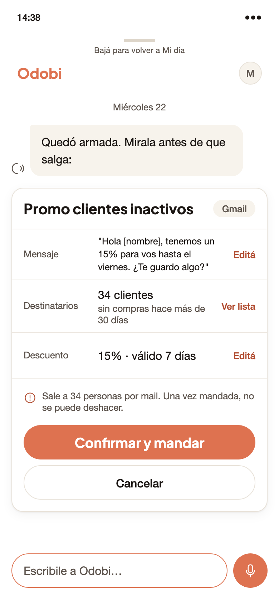

El puente — Decisión C funcionando
Este es el recorrido que conviene demostrar en vivo: es la única parte del sistema que no se entiende explicándola. Toda acción de tarjeta abre el chat con el contexto ya cargado y la propuesta armada; confirmás; volvés a Mi día con la tarjeta en estado resultado. Un solo gesto que aprender, en todas las features.
1Mi día
Tocás «Reclamá el pago»
La acción no ejecuta nada todavía.
→abre el chat

2Chat
Chip «↩ Desde tu aviso» + HITL armado
El contexto viaja con vos: no repetís lo que Odobi ya sabía.
→revisás

3HITL
Vos confirmás, Odobi ejecuta
Propuesta → detalle editable → confirmar/cancelar.
→vuelve
4Mi día
La tarjeta queda en estado resultado
El ciclo cierra donde empezó. Nadie quedó en una pantalla huérfana.